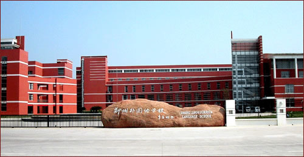
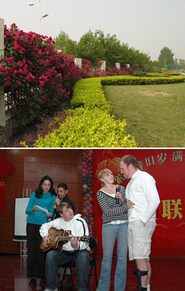

 Located in the Zhengzhou Low-tech
Development Zone, Zhengzhou Chinese Language School is a key senior
middle school under the direct guidance of the Zhengzhou Education
Bureau, which serves students from the 7th grade right through to the
12th grade. Accredited by The Department of Education of the P.R.C., it
belongs to the National Teaching Research Association, and is one of
the 13 top foreign language schools across China which is entitled to
directly send the top 20% of its graduates to famous universities such
as Tsinghua University, Beijing University, and Beijing Foreign Language
University. At present, Zhengzhou Chinese Language School has three
independent campuses, covering an area of 49.4 acres, with over 500
staff members and 7000 students. These campuses are independent both in
finance and in personnel; however, they are both under the principal's
leadership so that it maintains the consistent teaching philosophy.
During
the last 23 years, our school has tremendously transformed. Our
excellent academic achievements and bright school graduates have
enhanced our good reputation. The academic results of our school top
the highest standards in the province. We have maintained the highest
percentage of the junior middle school graduates accepted by the senior
high schools in Zhengzhou in the last 19 consecutive years. More than
90% of our senior high school students are admitted to colleges and
universities across the country.

Every single effort is made
to accept the best balance of students to optimize the learning
environment. As a foreign language school, in our English class, we
promise that all students can receive a qualified foreign language
education. We not only provide classes on grammar, but also oral
Chinese classes that are taught by native Chinese speakers. It offers
more opportunities for communication and participation. Our school
guarantees that our education will be the highest quality from the
courses we offer, we provide small-class sizes; we provide original
overseas teaching materials, the employment of teaching methods,
qualified teaching staff, modern facilities, and much more.
Zhengzhou Chinese Language School highly values
its talented, finest experienced teachers; our staff is recognized for
their hard-work, intelligence, good will, and passion for education;
they devote their time and effort to quality teaching. We are convinced
that meaningful learning is enhanced through active involvement in the
learning process; we believe that a productive and genuine atmosphere is
essential for learning and development of independence, collaboration,
and critical thinking. Our comprehensive, developmental, and proactive
guidance program addresses the personal, social, emotional, and academic
needs of our students. Moreover, a focus on the character traits of
respect, responsibility, trustworthiness, fairness, caring, and
citizenship emphasizes a positive and productive environment.
Zhengzhou Chinese Language
School is distinguished for its excellence in education and attracts the
best students from around Henan Province. It is always the first choice
for students who seek for success in academic field. We are committed
to student's individual growth. Our students demonstrate good personal
management by showing competence through mastering skills, learning
strategies, confidence, initiative, and self-reliance. Simply put,
Zhengzhou Chinese Language School students spend an extraordinary amount
of time pushing them to be the best they can be. Certainly this is
true in the classrooms, where students, challenged by their teachers,
listen to the questions asked and comments made by their peers.
Zhengzhou
Foreign Language School is a safe and encouraging place for students to
live and learn. The idea that each individual brings a unique and
valuable dimension to our school drives the relationships in our
community. We are seeking to meet the highest standards in performance,
athletic competition, artistic expression, leadership activity and
intellectual exploration. Zhengzhou Chinese Language School students
participate in numerous experiences that ultimately affirm their
aptitudes, values and abilities. Acutely aware that every encounter
affects a young person's development, staff faculty consciously
surrounds students with opportunities for intellectual and personal
growth, not only during class, but also during their extracurricular
activities and in their social lives.